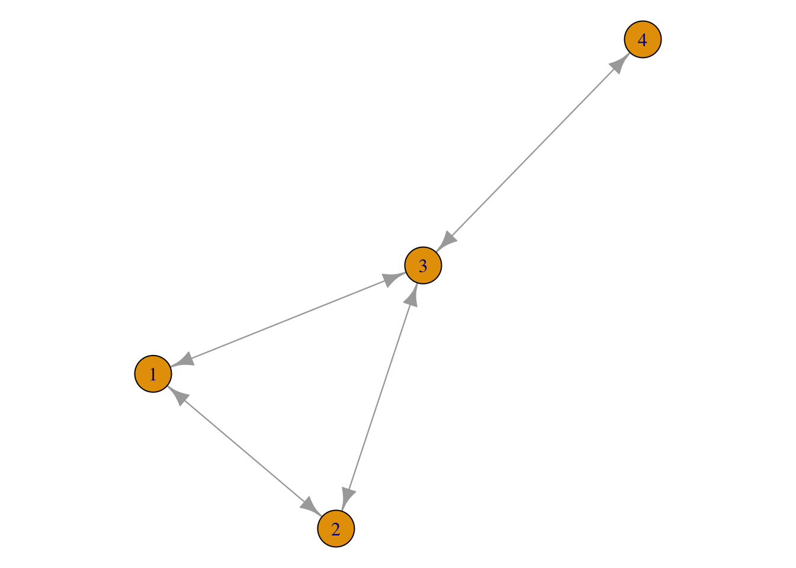
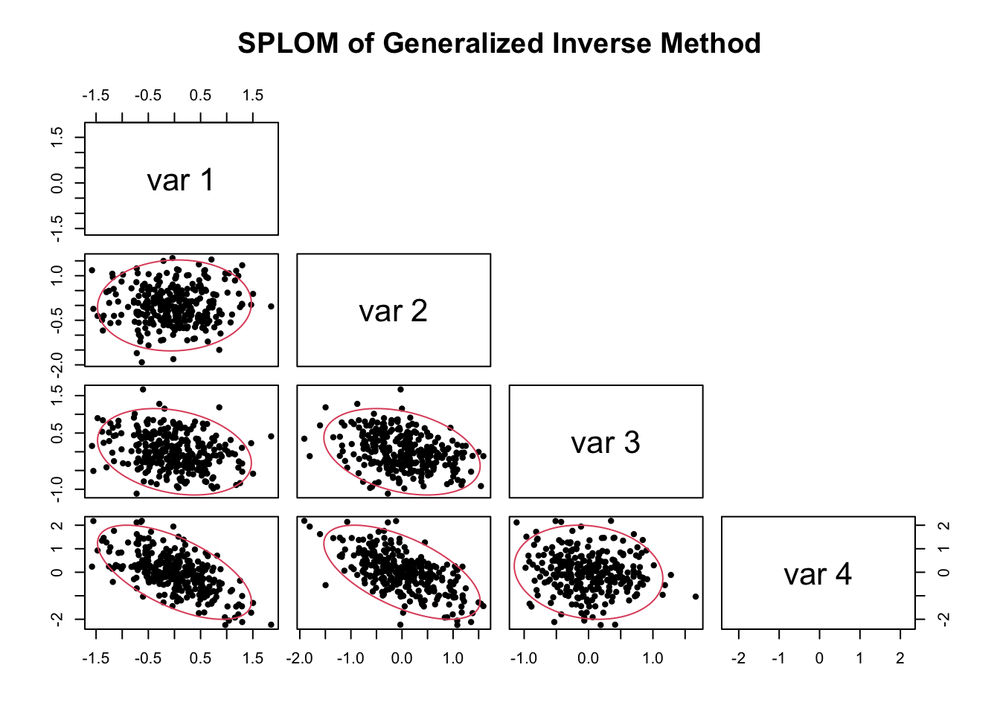
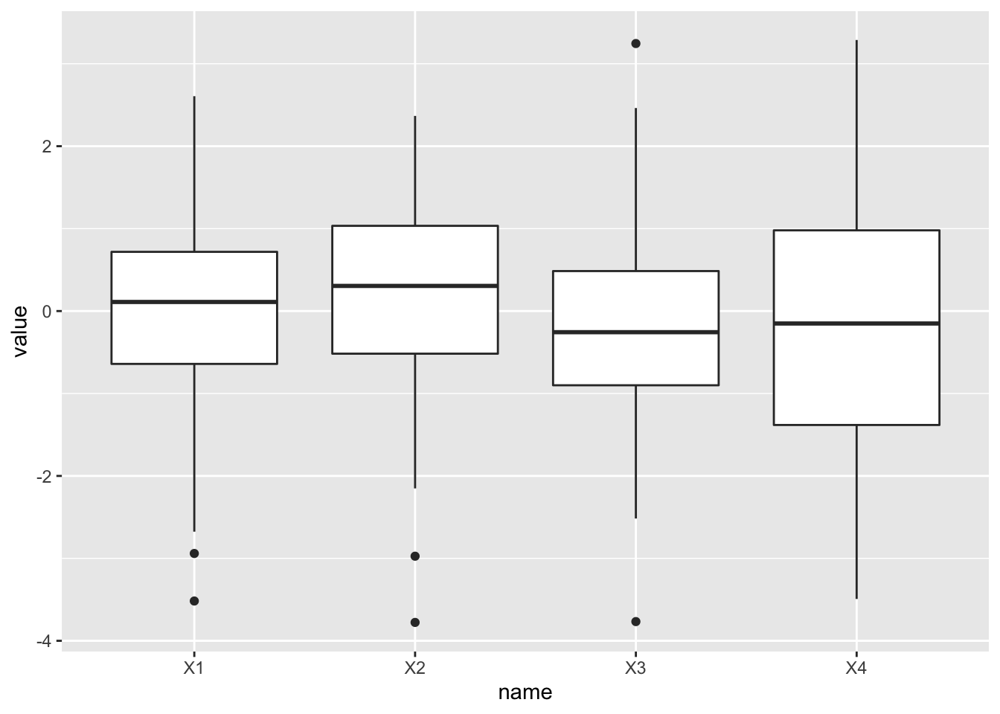
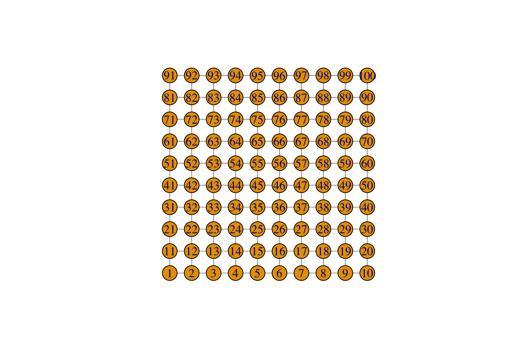

Libraries
library(MASS)
library(tidyverse)
library(CARBayes)
library(igraph)
library(mvtnorm)
library(sparseMVN)
library(ellipse) # for ellipse plotting
library(Matrix)
library(ggraph)
library(purrr)library(MASS)
library(tidyverse)
library(CARBayes)
library(igraph)
library(mvtnorm)
library(sparseMVN)
library(ellipse) # for ellipse plotting
library(Matrix)
library(ggraph)
library(purrr)The spatial variability and correlation is modeled as an intrinsic Gaussian Markov Random Field.
Suppose we have some model that looks like,
\begin{aligned} \eta_i = \mu + \mathbf{x}_i'\beta + b_i \end{aligned}
It is natural to specify b_i as a conditional distribution.
\begin{aligned} b_i | \mathbf{b_{-i}}, \tau^2_i \sim \mathcal{N}\big(\sum_{j:i\sim j} c_{ij}b_j, \tau^2_i\big) \end{aligned}
This conditional specification can be shown to be equivalent to the joint specification,
\begin{aligned} \mathbf{b} | \tau^2 \sim \mathcal{N} \big(0, D_{\tau^2}^{-1}(I - C)\big) \end{aligned}
The requirement that we impose here is that the covariance matrix is symmetric, Since D_{\tau^2} and I are symmetric, this results in the requirement that
\begin{aligned} \frac{c_{ij}}{c_{ji}} = \frac{\tau_i^2}{\tau_j^2} \end{aligned}
C is the matrix that controls the amount of correlation between the nodes. So how do we interpret C or how do we create it? The most direct interpretation of c_{ij} is that it signifies the strength of averaging from its neighbor, conditional on the strength of the neighbor.
How do we create C? We normally start with some symmetric distance matrix W, and then row standardize it. In some cases, we just start with the simple adjacency matrix.
$$ \begin{aligned} W &= \begin{pmatrix} 0 & w_{12} & w_{13} \\ w_{21} & 0 & w_{23} \\ w_{31} & w_{32} & 0 \end{pmatrix} \qquad \text{weighted distance matrix}\\ C &= \begin{pmatrix} 0 & w_{12}/w_{1+} & w_{13}/w_{1+} \\ w_{21}/w_{2+} & 0 & w_{23}/w_{2+} \\ w_{31}/w_{3+} & w_{32}/w_{3+} & 0 \end{pmatrix} \qquad \text{row standardized distance matrix}\\ D_{\tau^2} &= \begin{pmatrix} \sigma^2 / w_{1+} & & \\ & \sigma^2 / w_{2+} & \\ & & \sigma^2 / w_{3+} \end{pmatrix} \\ Q &= D_{\tau^2}^{-1}(I - C) \\ &=\frac{1}{\sigma^2} \left[\begin{pmatrix} w_{1+} & & \\ &w_{2+} & \\ & &w_{3+} \end{pmatrix} - \begin{pmatrix} 0 & w_{12} & w_{13} \\ w_{21} & 0 & w_{23} \\ w_{31} & w_{32} & w_{33} \end{pmatrix}\right] \end{aligned}$$
We’ll use the lollipop graph, and suppose that we observe some random process on the graph.
W <- matrix(c(0, 1, 1, 0,
1, 0, 1, 0,
1, 1, 0, 1,
0, 0, 1, 0), nrow = 4, byrow = T)
g <- graph_from_adjacency_matrix(W)
par(oma = c(0, 0, 0, 0),
mar = c(0, 0, 0, 0))
plot(g)
# return the standard Laplacian matrix from CAR
Qcar <- function(W, rho = 1, sigma2 = 1) {
DW <- diag(rowSums(W))
return((DW - rho*W) / sigma2)
}# CAR(1, \sigma^2)
C <- diag(1/rowSums(W)) %*% W # row standardize the matrix
sigma2 <- 2
Dtau2 <- diag(sigma2 / rowSums(W))
DW <- diag(rowSums(W)) # diagonal of out degree
L <- DW - W # weighted laplacian
(DW - W) / sigma2 # precision = L / sigma2
## [,1] [,2] [,3] [,4]
## [1,] 1.0 -0.5 -0.5 0.0
## [2,] -0.5 1.0 -0.5 0.0
## [3,] -0.5 -0.5 1.5 -0.5
## [4,] 0.0 0.0 -0.5 0.5
solve(Dtau2) %*% (diag(4) - C) # precision = D_tau^{-1}(I-C)
## [,1] [,2] [,3] [,4]
## [1,] 1.0 -0.5 -0.5 0.0
## [2,] -0.5 1.0 -0.5 0.0
## [3,] -0.5 -0.5 1.5 -0.5
## [4,] 0.0 0.0 -0.5 0.5See sampling from singular normal (blog post)
set.seed(1)
Sigma <- ginv(L)
X_gi <- mvtnorm::rmvnorm(300, sigma = Sigma)
# scatter plot with ellipses
scatter.ellipse <- function(x, y) {
points(x, y, pch = 20)
lines(ellipse(cov(cbind(x, y))), col = 2)
}
pairs(X_gi, upper.panel = NULL, lower.panel = scatter.ellipse,
main = "SPLOM of Generalized Inverse Method")
The idea of this method is to take SVD, and truncate the matrix null values
\begin{aligned} Cov(X) &= \Sigma = UDV \end{aligned}
\begin{aligned} \Sigma^{-1} = V'D^{-1}U' \end{aligned}
One of these principle components has eigenvalue 0, thus, we can form a positive definite matrix by truncating.
set.seed(1)
L_svd <- svd(L) # UDV
# zapsmall(L_svd$v[,1:3] %*% diag(L_svd$d[1:3]) %*% t(L_svd$u[,1:3])) # V'DU
Sigma <- L_svd$v[,1:3] %*% diag(1/L_svd$d[1:3]) %*% t(L_svd$u[,1:3]) # U'D^{-1}V
X_svd <- mvtnorm::rmvnorm(300, sigma = Sigma)
pairs(X_svd, upper.panel = NULL, lower.panel = scatter.ellipse,
main = "SPLOM of Generalized Inverse Method")
Cressie’s parameterization gives another parameter to control the degree of spatial averaging in the
The variable is \rho, which will take values between 0 < \rho 1. As \rho \rightarrow 0, then the spatial variability disappears.
\begin{aligned} \phi_i | \phi_{-i} \sim N(0, (I-\rho C)^{-1}D) \end{aligned}
Let
\begin{aligned} Y = \mu + \phi \end{aligned}
# CAR(rho, sigma2)
cressieCAR <- function(nsamples = 10, W, rho = .5, sigma2=1) {
DW <- diag(rowSums(W))
Q <- (DW - rho * W) / sigma2
print(solve(Q))
mvtnorm::rmvnorm(nsamples, sigma = solve(Q))
}
library(tidyverse)
cressie_sim <- data.frame(rho = c(0, .1, .4, .8, .9)) %>%
rowwise() %>%
mutate(x = list(data.frame(cressieCAR(10, W, rho, sigma2 = 2)))) [,1] [,2] [,3] [,4]
[1,] 1 0 0.0000000 0
[2,] 0 1 0.0000000 0
[3,] 0 0 0.6666667 0
[4,] 0 0 0.0000000 2
[,1] [,2] [,3] [,4]
[1,] 1.004365710 0.051984758 0.03532945 0.003532945
[2,] 0.051984758 1.004365710 0.03532945 0.003532945
[3,] 0.035329447 0.035329447 0.67125949 0.067125949
[4,] 0.003532945 0.003532945 0.06712595 2.006712595
[,1] [,2] [,3] [,4]
[1,] 1.08901515 0.25568182 0.1893939 0.07575758
[2,] 0.25568182 1.08901515 0.1893939 0.07575758
[3,] 0.18939394 0.18939394 0.7575758 0.30303030
[4,] 0.07575758 0.07575758 0.3030303 2.12121212
[,1] [,2] [,3] [,4]
[1,] 1.8777614 1.1634757 1.030928 0.8247423
[2,] 1.1634757 1.8777614 1.030928 0.8247423
[3,] 1.0309278 1.0309278 1.546392 1.2371134
[4,] 0.8247423 0.8247423 1.237113 2.9896907
[,1] [,2] [,3] [,4]
[1,] 3.120493 2.430838 2.281369 2.053232
[2,] 2.430838 3.120493 2.281369 2.053232
[3,] 2.281369 2.281369 2.788340 2.509506
[4,] 2.053232 2.053232 2.509506 4.258555cressie_sim %>% unnest_wider(x) %>% unnest(X1:X4) %>%
pivot_longer(X1:X4) %>%
ggplot(aes(name, value)) +
geom_boxplot()
W <- make_star(5, mode = "undirected") %>% as_adj()
Qcar(W) # not symmetric when the weight matrix is not symmetric5 x 5 sparse Matrix of class "dgCMatrix"
[1,] 4 -1 -1 -1 -1
[2,] -1 1 . . .
[3,] -1 . 1 . .
[4,] -1 . . 1 .
[5,] -1 . . . 1I don’t think using the graph laplacian for spatial random effects is very powerful, using a laplacian matrix for the normal distribution does not induce a very strong effect, and also presupposes the spatial dependencies in the model. I think that it’s not very economical use of the parameters in the model. There’s not nearly the degree of spatial averaging that you’d expect
Here we use libraries to visualize the process, and thus the richness of our modeling space.
library(mclcar)set.seed(33)
n.torus <- 10
rho <- 0.2
sigma <- 1.5
prec <- 1/sigma
beta <- c(1, 1)
XX <- cbind(rep(1, n.torus^2), sample(log(1:n.torus^2)/5))
mydata1 <- CAR.simTorus(n1 = n.torus, n2 = n.torus, rho = rho, prec = prec)
CAR.simTorusfunction (n1, n2, rho, prec)
{
x <- list(c(2, n2), rep(1, 2))
Wx <- circulant.spam(x, n = n2)
Ix <- diag.spam(1, n1)
W <- kronecker(Ix, Wx) + kronecker(Wx, Ix)
ew <- eigen(W, only.values = TRUE)$values
min <- 1/min(ew)
max <- 1/max(ew)
if (rho < min | rho > max)
stop(paste("rho should be within", min, max))
I <- diag.spam(1, n1 * n2)
Q <- as.spam(prec * (I - rho * W))
cholR <- chol.spam(Q, pivot = "MMD", memory = list(nnzcolindices = 6.25 *
n1 * n2))
X <- backsolve(cholR, rnorm(n1 * n2))
W <- as.matrix(W)
result <- list(W = W, X = X)
return(result)
}
<bytecode: 0x7fda99e945c0>
<environment: namespace:mclcar>Wmat <- mydata1$W
mydata2 <- CAR.simWmat(rho = .2, prec = prec, W = Wmat)tmp <- graph_from_adjacency_matrix(Wmat, mode = "undirected")
plot(tmp, layout = layout.grid(tmp))
To better fit the data, we split up the spatial effects into spatial components and independent errors for each of the locations. Now it’s more like a mixed model, where we can add some level of independent noise to each observation